전기공사기사 (2008-05-11 기출문제)
1과목: 전기응용 및 공사재료
1. 1000m2]의 방에 1000[lm]의 광속을 발산하는 전등 10개를 점등하였다. 조명률은 0.5이고 감광 보상률이 1.5라면 이 방의 평균 조도는 약 몇 [lx] 인가?
- 3.33
- 4.33
- 6.66
- 8.66
(정답률: 77%)

2. 다음 중 적외선 가열에 대한 설명으로 틀린 것은?
- .조작이 간단하고, 온도조절이 쉽다.
- 발열체로는 적외선 전구를 많이 사용하고 있으며, 그 배열이 매우 간단하다.
- 효율이 좋지 않으며, 표면가열이 불가능하다.
- 고온 물체에서 나오는 적외선 조사에 의하여 건조에 필요한 열량을 재료에 주는 것이 적외선 가열이다.
(정답률: 85%)
3. 다음 설명 중 옳은 것은?
- DIAC은 NPN 3층으로 되어 있고 쌍방향으로 대칭적인 부성 저항을 나타낸다.
- SCR은 PNPN이라는 2층의 구조로 되어있다.
- 트라이액은 2극 쌍방향 사이리스터로 되어있다.
- SSS는 3극 쌍방향 사이리스터로 되어있다.
(정답률: 72%)
4. 전기철도에서 교류 급전방식이 아닌 것은?
- 직접 급전 방식
- 주변압기 방식
- 흡상 변압기 방식
- 단권 변압기 방식
(정답률: 50%)
5. 초음파 용접의 특징이 아닌 것은?
- 이종금속의 용접도 가능하다.
- 고체상태에서 용접이므로 열적 영향이 크다.
- 가열이 필요하지 않다.
- 냉간압접 등에 비하여 가압하중이 적으므로 변형이 적다.
(정답률: 63%)
6. 지름이 3[cm] 길이 1.2[m]인 관형 광원의 직각 방향의 광도를 504[cd]라고 하면 이 광원 표면 위의 휘도[sb]는?
- 5.6
- 4.4
- 2.6
- 1.4
(정답률: 49%)
7. down-light의 일종으로 아래로 조사되는 구멍을 적게 하거나 렌즈를 달아 복도에 집중 조사되도록 한 조명은?
- pin hole light
- coffer light
- line light
- cornis light
(정답률: 84%)
8. 직류전동기의 기동방식에 적합한 것은?
- 기동 보상기법
- 전전압 기동법
- 저항 기동법
- Y-△ 기동법
(정답률: 70%)
9. 기체 또는 액체 속에 고체의 입자가 분산되어 있을 경우 이에 전압을 가하면 입자가 이동한다. 이러한 현상을 무엇이라 하는가?
- 전기침투
- 전기투석
- 전기영동
- 전기방식
(정답률: 83%)
10. 다음 중 사이리스터의 응용에 대한 설명이 잘못된 것은?
- AC-DC 변환이 가능하다.
- 위상제어에 이해 AC 변환이 가능하다.
- AC 전원에서 가변주파수 AC 변환이 가능하다.
- DC 전력의 증폭인 컨버터가 가능하다.
(정답률: 83%)
11. 후강 전선관에서 관의 호칭이 잘못된 것은?
- 15[mm]
- 22[mm]
- 28[mm]
- 36[mm]
(정답률: 78%)
12. 알칼리 축전지의 특징이 아닌 것은?
- 전지의 수명이 납 축전지보다 길다.
- 진동 충격에 강하다.
- 급격한 충ㆍ방전 및 높은 방전율에 견디기 어렵다.
- 효율이 납 축전지에 비해 다소 떨어진다.
(정답률: 73%)
13. 다음 설명 중 잘못된 것은?
- 불연성이란 사용 중 닿게 될지도 모르는 불꽃, 아크 또는 고열에 의하여 연소되지 않는 성질을 말한다.
- 내화성이란 사용 중 닿게 될지도 모르는 불꽃, 아크 또는 고열에 의하여 연소되는 일이 없고 또한 실용상 지장을 주는 변형 또는 변질을 하지 않는 성질을 말한다.
- 난연성이란 불꽃, 아크 또는 저열에 의하여 착화하지 않거나 또는 착화하여도 연소가 잘되는 성질을 말한다.
- 내고온형이란 고온장소에서 사용에 적합한 성능을 가지는 것을 말한다.
(정답률: 65%)
14. 다음 중 돌침재료가 아닌 것은?
- 동
- 알루미늄
- 플렉시블 외장 케이블
- 용융 아연도금한 철
(정답률: 64%)
15. 전력케이블에서 tanδ에 의해 발생 되는 손실은?
- 연피손
- 저항손
- 유전체손
- 표피손
(정답률: 73%)
16. 방전등의 일종으로서 효율이 대단히 좋으며, 광색은 순황색이고 연기나 안개 속을 잘 투과하며 대비성이 좋은 것은?
- 수은등
- 형광등
- 나트륨등
- 요오드등
(정답률: 87%)
17. 방폭배관의 부속품이 아닌 것은?
- 실링 휘팅
- 드레인 휘팅
- 타워 휘팅
- 콘듀레이트 휘팅
(정답률: 62%)
18. 600V 2종 비닐 절연전선에 해당하는 약호는?(오류 신고가 접수된 문제입니다. 반드시 정답과 해설을 확인하시기 바랍니다.)
- DV
- IV
- HIV
- IE
(정답률: 62%)
19. 자심재료는 자기적 성질이 현저하여야 하며, 히스테리 시스손이나 맴돌이 전류손이 가급적 작아야 한다. 다음 중 자심 재료의 성질로 적절하지 않은 것은?
- 저항률이 클 것
- 투자율이 작을 것
- 극히 작은 약자장에 의하여 잔류 자속이 소멸되는 성질을 가질 것
- 보자력과 잔류 자기의 값이 작을 것
(정답률: 60%)
20. 다음 중 배전반 및 분전반을 넣은 함의 요건으로 적합하지 않은 것은?
- 반의 옆쪽 또는 뒤쪽에 설치하는 분배전반의 소형덕트는 강관제 이어야 한다.
- 난연성 합성수지로 된 것은 두께가 최소 1.6mm 이상으로 내(耐)수지성인 것 이어야 한다.
- 강관제의 것은 두께 1.2mm 이상이어야 한다. 다만 가로 또는 세로의 길이가 30cm 이하인 것은 두께 1.0mm 이상으로 할 수 있다.
- 절연저항 측정 및 전선접속단자의 점검이 용이한 구조이어야 한다.
(정답률: 78%)
2과목: 전력공학
21. 송전단전압 161kV, 수전단전압 154kV, 상차각 40°, 리액턴스 45Ω일 때 선로손실을 무시하면 전송전력은 약 몇[MW]인가?
- 323MW
- 443MW
- 354MW
- 623MW
(정답률: 14%)
22. 66kV, 60Hz 3상 1회선 송전선이 통신선과 나란히 가선되어 있다. 송전선의 1선지락사고로 영상전류가 80A 흐를때 통신선에 유기되는 전지 유도 전압은 약 몇 [V]인가? (단, 영상전류는 전 전선에 걸쳐 같은 크기이고 상호 인덕턴스는 0.⑤mH/km 이며, 송전선과 통신선의 병행길이는 40km 이다.)
- 75V
- 136V
- 150V
- 181V
(정답률: 7%)
23. 어느 수차의 정격회전수가 450rpm이고 유효낙차가 220m 일 때 출력은 6000kW 이었다. 이 수차의 특유속도는 약 몇 [mㆍkW]인가?
- 35mㆍkW
- 38mㆍkW
- 41mㆍkW
- 47mㆍkW
(정답률: 9%)
24. 다음 중 송전계통에서 안정도 증진과 관계없는 것은?
- 리액턴스 감소
- 재폐로방식의 채용
- 속응여자방식의 채용
- 차폐선의 채용
(정답률: 13%)
25. 다음 중 코로나 임계전압에 직접 관계가 없는 것은?
- 전선의 굵기
- 기상조건
- 애자의 강도
- 선간거리
(정답률: 9%)
26. 한류리액터를 사용하는 가장 큰 목적은?
- 충전전류의 제한
- 접지전류의 제한
- 누설전류의 제한
- 단락전류의 제한
(정답률: 12%)
27. 직류송전방식이 교류송전방식에 비하여 유리한 점을 설명한 것으로 옳지 않은 것은?
- 표피효과에 의한 송전손실이 없다.
- 통신선에 대한 유도잡음이 적다.
- 선로의 절연이 쉽다.
- 정류가 필요 없고 승압 및 강압이 쉽다.
(정답률: 11%)
28. 송전전력, 선간전압, 부하역률, 전력손실 및 송전거리를 동일하게 하였을 경우 단상 2선식에 대한 3상 3선식의 총 전선량(중량)비는 얼마인가?
- 0.75
- 0.94
- 1.15
- 1.33
(정답률: 8%)
29. 66kV 3상 1회선 송전선로에서 1선의 리액턴스가 22Ω, 전류가 300A일 때 % 리액턴스는?
- 10√2
- 10√3
- 10/√2
- 10/√3
(정답률: 7%)
30. 복도체에 있어서 소도체의 반지름을 r[m], 소도체사이의 간격을 S[m]라고 할 때 2개의 소도체를 사용한 복도체의 등가 반지름은?
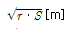
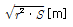
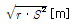
- r ‧ S[m]
(정답률: 14%)
31. 다음 중 원자로 냉각재의 구비 조건으로 적절하지 않은 것은?
- 비열이 클 것
- 중성자 흡수가 많을 것
- 열전도도가 클 것
- 유도방사능이 적을 것
(정답률: 10%)
32. 전력선에 의한 통신선로의 전자유도장해의 주된 발생요인으로 가장 알맞은 것은?
- 전력선의 연가가 충분하기 때문에
- 전력선의 전압이 통신선로보다 높기 때문에
- 영산전류가 흐르기 때문에
- 전력선과 통신선로 사이의 차폐효과가 충분하기 때문에
(정답률: 14%)
33. 20kV 미만의 옥내 변류기로 주로 사용되는 것은?
- 유입식 권선형
- 부싱형
- 관통형
- 건식 권선형
(정답률: 9%)
34. 다음 중 무부하시의 충전전류 차단만이 가능한 기기는?
- 진공차단기
- 유입차단기
- 단로기
- 자기차단기
(정답률: 13%)
35. 22.9kV 가공배전선로에서 주 공급선로의 정전사고 시 예비 전원 선로로 자동 전환되는 개폐장치는?
- 고장구간 자동 개폐기
- 자동선로 구분 개폐기
- 자동부하 전환 개폐기
- 기중부하 개폐기
(정답률: 12%)
36. 저압뱅킹 배전방식에서 캐스케이딩현상을 방지하기 위하여 인접 변압기를 연락하는 저압선의 중간에 설치하는 것으로 알맞은 것은?
- 구분퓨즈
- 리클로우저
- 섹셔널라이저
- 구분개폐기
(정답률: 7%)
37. 송전선로에 매설지선을 설치하는 목적으로 알맞은 것은?
- 직격뇌로부터 송전선을 차폐보호하기 위하여
- 철탑 기초의 강도를 보강하기 위하여
- 현수애자 1연의 전압 분담을 균일화 하기 위하여
- 철탑으로부터 송전선로로의 역섬락을 방지하기 위하여
(정답률: 12%)
38. 동기조상기에 대한 설명 중 옳지 않은 것은?
- 무부하로 운전되는 동기전동기로 역률을 개선한다.
- 전압조정이 연속적이다.
- 중부하시에는 과여자로 운전하여 뒤진 전류를 취한다.
- 진상, 지상 무효전력을 모두 얻을 수 있다.
(정답률: 14%)
39. 배전선로에서 수용가에의 공급 전압을 허용 범위 내에 유지하기 위해서 작용하는 방법이 아닌 것은?
- 배전변압기에서의 전압조정에는 고압선 각부의 전압에 따라서 배전변압기의 사용 탭을 적정하게 선정한다.
- 66kV 이하의 변전소에서의 전압조정에는 모선 또는 급전선 마다 정지형 전압 조정기를 설치해서 조정한다.
- 우리나라에서는 배전선로에서의 전압강하 한도를 10%로 잡고 적정한 전압강하 값을 설비별로 분담하는 방법으로 전압 조정용 기기와 병용해서 사용한다.
- 배전선로의 부하는 중부하시와 경부하시에 크게 변화하므로 변전소 수전측의 송전선로에 대해서는 소호리액터를 사용해서 조정한다.
(정답률: 8%)
40. 어느 발전소에서 40000kAh를 발전하는데 발열량 5000kcal/kg의 석탄을 20톤 사용하였다. 이 화력발전소의 열효율은 약 몇 [%] 인가?
- 27.5%
- 30.4%
- 34.4%
- 38.5%
(정답률: 15%)
3과목: 전기기기
41. 4극, 7.5[kW], 200[V], 60[Hz]인 3상 유도 전동기가 있다. 전부하에서 2차 입력이 7950[W]이다. 이 경우 2차 효율[%]은 얼마인가? (단, 기계손은 130[W]이다.)
- 93
- 94
- 95
- 96
(정답률: 11%)
42. 동기발전기에서 기전력의 고조파가 감소해서 파형을 좋게 하고 권선의 리액턴스를 감소시키기 위하여 채택한 권선법으로 알맞은 것은?
- 전절권
- 집중권
- 분포권
- 단절권
(정답률: 13%)
43. 200[V], 60[Hz], 6극, 10[kW]의 3상 유도전동기가 있다. 전부하시의 회전수가 1152[rpm]이면 회전자 기전력의 주파수는 몇 [Hz] 인가?
- 2.2
- 2.4
- 2.6
- 2.8
(정답률: 10%)
44. 교류발전기의 손실은 당자전압 및 역률이 일정할 때 P=Po+α
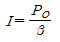
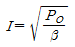
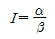
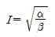
(정답률: 10%)
45. 단상 유도 전압 조정기와 3상 유도 전압조정기의 비교 설명으로 옳지 않은 것은?
- 모두 회전자와 고정자가 있으며, 한편에 1차 권선을 다른 편에 2차 권선을 둔다.
- 모두 입력전압과 이에 대응한 출력전압 사이에 위상차가 있다.
- 단상 유도 전압 조정기에는 단락코일이 필요하나 3상에서는 필요 없다.
- 모두 회전자의 회전각에 때라 조정된다.
(정답률: 3%)
46. 동기기의 전기자 저항을 r, 전기자 반작용 리액턴스를 Xa, 누설 리액턴스를 Xℓ이라고 하면 동기 임피던스를 표시하는 식은?
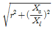
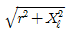
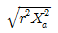
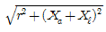
(정답률: 12%)
47. 다음 ( )안에 알맞은 내용을 순서대로 나열한 것은?
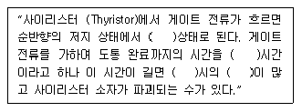
- 온(On), 턴온(Turn on), 스위칭, 전력손실
- 온(On), 턴온(Turn on), 전력손실, 스위칭
- 스위칭, 온(On), 턴온(Turn on), 전력손실
- 턴온(Turn on), 스위칭, 온(On), 전력손실
(정답률: 12%)
48. AC 서보전동기(AC servomotor)의 설명 중 틀린 것은?
- AC 서보전동기는 그다지 큰 회전력이 요구되지 않는 시스템에 사용되는 전동기이다.
- 이 전동기에는 기준권선과 제어권선의 두 고정자 권선이 있으며, 90° 위상차가 있는 2상 전압을 인가하여 회전자계를 만든다.
- 고정자의 기준권선에는 정전압을 인가하며, 제어권선에는 제어용 전압을 인가한다.
- 이 전동기는 속도 회전력 특성을 선형화하고 제어전압을 입력으로 회전자의 회전각을 출력으로 보았을 때 이 전동기의 전달함수는 미분요소와 2차 요소의 직렬 결합으로 볼 수 있다.
(정답률: 10%)
49. 변압기의 누설 리액턴스를 줄이는 가장 효과적인 방법은 어느 것인가?
- 철심의 단면적을 크게 한다.
- 코일의 단면적을 크게 한다.
- 권선을 분할하여 조립한다.
- 권선을 동심 배치한다.
(정답률: 12%)
50. 단상 50[kVA] 1차 3300[V], 2차 210[V] 60[Hz] 1차 권회수 550, 철심의 유효단면적 150[cm2]의 변압기 철심의 자속밀도 [Wb/m2]는 약 얼마인가?
- 2.0
- 1.5
- 1.2
- 1.0
(정답률: 12%)
51. 3상 유도전동기의 기동법 중 전전압 기동에 대한 설명으로 옳지 않은 것은?
- 소용량 농형 전동기의 기동법이다.
- 전동기 단자에 직접 정격전압을 기한다.
- 소용량의 농형 전동기는 일반적으로 기동 시간이 길다.
- 기동시에 역률이 좋지 않다.
(정답률: 9%)
52. 3상 동기발전기의 여지전류 10[A]에 대한 단자전압이 1000√3[V],. 3상 단락전류는 50A 이다. 이 때의 동기임피던스는 몇 [Ω]인가?
- 5
- 11
- 20
- 34
(정답률: 13%)
53. 변압기의 단락시험과 관계가 없는 것은?
- 누설 리액턴스
- 전압 변동률
- 임피던스 와트
- 여자 어드미턴스
(정답률: 12%)
54. 직류전동기의 규약효율 (
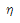
)은 어떤 식으로 표현 되는가?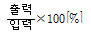
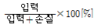
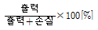
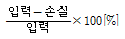
(정답률: 13%)
55. 단락비가 큰 동기기에 대한 설명으로 알맞은 것은?
- 전기자 반작용이 크다.
- 기계가 소형이다.
- 전압변동율이 크다.
- 안정도가 높다.
(정답률: 15%)
56. 직류발전기를 병렬운전 하는데 균압선을 설치하는 발전기는?
- 타여자 발전기
- 복권 발전기
- 분권 발전기
- 동기 발전기
(정답률: 10%)
57. 동기기의 3상 단락곡선이 직선이 되는 이유로 가장 알맞은 것은?
- 누설 리액턴스가 크므로
- 자기포화가 있으므로
- 무부하 상태이므로
- 전기자 반작용으로
(정답률: 13%)
58. 3상 유도기에서 출력의 변환 식으로 옳은 것은?
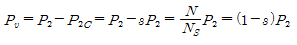
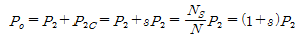
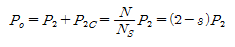
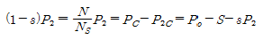
(정답률: 18%)
59. 다음은 IGBT에 관한 설명이다. 잘못된 것은?
- Insulated Gate Bipolar Thyristor의 약자이다.
- 트랜지스터와 MOSFET를 조합한 것이다.
- 고속 스위칭이 가능하다.
- 전력용 반도체 소자이다.
(정답률: 12%)
60. 3300/210[V], 10[kVA]의 단상변압기가 있다. % 저항강하는 3[%], %리액턴스강하는 4[%]이다. 이 변압기가 무부하인 경우의 2차 단자전압은 약 몇 [V] 인가? (단, 변압기는 지역률 80[%]일 때 정격출력을 낸다고 한다.
- 168
- 216
- 220
- 228
(정답률: 6%)
4과목: 회로이론 및 제어공학
61. 그림과 같이 1개의 콘덴서와 2개의 코일이 직렬로 접속된 회로에 300[Hz]의 주파수가 공진한다고 한다. 콘덴서의 정전 용량 및 코일의 자기 인덕턴스를 각각 C=25[μF], L1=4.3[mH], L2=4.6[mH]라고 하면 코일간의 상호 인덕턴스 M 값은 약 몇 [mH] 인가? (단, 코일은 같은 방향으로 감겨져 있고, 동일 축상에 놓여져 있는 것으로 한다.)
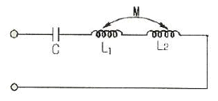
- 2.36
- 1.18
- 1.91
- 1.0
(정답률: 9%)
62. 어느 함수가f(t)=1-e-at인 것을 라플라스 변환하면?
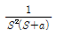
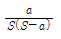
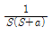
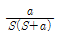
(정답률: 12%)
63. 그림과 같은 순저항 회로에서 대칭 3상 전압을 가할 때 각 선에 흐르는 전류가 같으려면 R의 값은 몇 [Ω]인가?
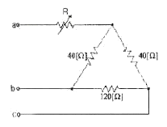
- 4
- 8
- 12
- 16
(정답률: 7%)
64. 그림과 같은 4단자 회로의 4단자 정수 A, B, C, D에서 C의 값은?
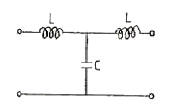
- 1-jωC
- 1-ω2LC
- jωL(2-ω2LC)
- jωC
(정답률: 8%)
65.
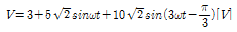
의 실효치는 몇 [V] 인가?- 12.6
- 11.5
- 10.6
- 9.6
(정답률: 13%)
66. RC저역 여파기 회로의 전달함수G(jω)에서
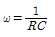
인 경우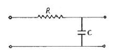
- 1
- 0.707
- 0.5
- 0
(정답률: 8%)
67. 전송 선로에서 무손실일 때, L=96[mH], C=0.6[μF]이면 특성 임피던스 [Ω]는?
- 400
- 500
- 600
- 700
(정답률: 11%)
68. 저항 R, 커패시턴스 C의 병렬회로에서 전원 주파수가 변할 때의 임피던스 궤적은?
- 제1상한 내의 반직선
- 제1상한 내의 반원
- 제4상한 내의 반원
- 제4상한 내의 반직선
(정답률: 7%)
69. 대칭 3상 전압이 a상 Va, b상 Vb=a2Va, c상 Vc=aVa일 때 a 상을 기준으로 한 대칭분 전압 중 V1은 어떻게 표시되는가?
- 1/3Va
- Va
- aVa
- a2Va
(정답률: 10%)
70. R=5[Ω],L=1[H]의 직렬회로에 직류 10[V]를 가할 때 순간의 전류식은?
- 5(1-e-5t)
- 2e-5t
- 5e-5t
- 2(1-e-5t)
(정답률: 6%)
71. 전달함수
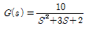
으로 표시되는 제어 계통에서 직류 이득은 얼마인가?- 1
- 2
- 3
- 5
(정답률: 8%)
72. 그림과 같은 블럭 선도에서 C의 값은?
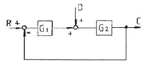
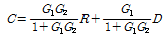
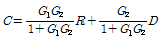
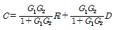
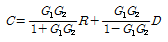
(정답률: 6%)
73. 특성방정식이 실수계수를 갖는 S의 유리함수일 때 근궤적은 무슨 축에 대하여 대칭인가?
- 실수측
- 허수측
- 대상축 없음
- 원점
(정답률: 9%)
74. 다음 회로는 무엇을 나타낸 것인가?
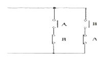
- AND
- OR
- Exclusive OR
- NAND
(정답률: 13%)
75. 샘플링된 신호를 다음 샘플링 신호와 직선으로 연결하는 홀드를 무엇이라 하는가?
- Zero Order Hold
- First Order Hold
- Second Order Hold
- Third Order Hold
(정답률: 11%)
76. 제어 목적에 의한 분류에 해당 되는 것은?
- 프로세스 제어
- 서보 기구
- 자동조정
- 비율제어
(정답률: 7%)
77. 어떤 제어계의 전달함수가
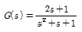
로 표시될 때, 이 계에 입력 x(t)를 가했을 경우 출력 y(t)를 구하는 미분방정식으로 알맞은 것은?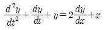
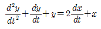
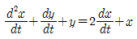
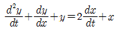
(정답률: 9%)
78. 단위 부궤한 제어시스템(until negative feedback control system)의 개루프(open loop) 전달함수 G(s)가 다음과 같이 주어져 있다. 이 때 다음 설명 중 틀린 것은?
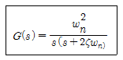
- 이 시스템은 ζ=1.2일 때 과제동된 상태에 있게 된다.
- 이 폐루프 시스템의 특성방정식은 s2+2ζωns+ωn2=0이다.
- ζ 값이 작게 될수록 제동이 많이 걸리게 된다.
- ζ 값이 음의 값이면 불안정하게 된다.
(정답률: 10%)
79. 특성방정식 S2+KS+2K-1=0인 계가 안정될 K의 범위는?
- K>0
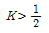
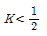
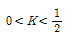
(정답률: 11%)
80. 상태방정식
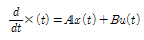
, 출력방정식 y(t)=Cx(t)에서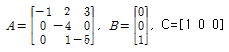
일 때 아래 설명 중 맞는 것은?- 이 시스템은 가제어(controllable)하고, 가관측(observable) 하다.
- 이 시스템은 가제어(controllable)하나, 가관측하지 않다(unobservable).
- 이 시스템은 가제어하지 않으나(uncontrollable), 가관측하다(observable).
- 이 시스템은 가제어하지 않고(uncontrollable), 가관측하지 않다(unobservable).
(정답률: 10%)
5과목: 전기설비기술기준 및 판단기준
81. 저압 전로의 중성점에 접지선으로 시설하는 연동선의 지름은 몇[mm] 이상 이어야 하는가?(관련 규정 개정전 문제로 여기서는 기존 정답인 2번을 누르면 정답 처리됩니다. 자세한 내용은 해설을 참고하세요.)
- 2.0mm 이상
- 2.6mm 이상
- 3.2mm 이상
- 4.0mm 이상
(정답률: 13%)
82. 태양전지 발전소에 시설하는 태양전지 모듈을 옥내에 시설할 경우 사용하는 공사방법에 포함되지 않는 것은?
- 합성수지관공사
- 애자공사
- 금속관공사
- 케이블공사
(정답률: 11%)
83. 사용전압 60000V인 특별고압가공전선과 그 지지물ㆍ지주ㆍ완금류 또는 지선 사이의 이격거리는 일반적으로 몇 [cm]이상이어야 하는가?
- 35cm
- 40cm
- 45cm
- 65cm
(정답률: 10%)
84. 교통신호등 회로의 사용전압은 몇 [V] 이하이어야 하는가?
- 110V
- 220V
- 300V
- 380V
(정답률: 13%)
85. 66kV가공전선로에 6kV가공전선을 동일 지지물에 시설하는 경우 특별고압 가공전선은 케이블인 경우를 제외하고 인장강도가 몇 [kN] 이상의 연선 이어야 하는가?
- 5.26kN
- 8.31kN
- 14.5kN
- 21.67kN
(정답률: 6%)
86. 가공 전선로의 지지물에 시설하는 지선의 시방 세목으로 옳은 것은?
- 안전율은 1.2 이상일 것
- 지선에 연선을 사용할 경우 소선은 3가닥 이상의 연선일 것
- 소선은 지름 1.6mm 이상인 금속선을 사용할 것
- 허용 인장하중의 최저는 3.41kN 일 것
(정답률: 15%)
87. 다음 중 터널 안 전선로의 시설방법으로 옳은 것은?
- 저압전선은 지름 2.6mm 의 경동선이 절연전선을 사용하였다.
- 고압전선은 절연전선을 사용하여 합성수지관 공사로 하였다.
- 저압전선을 애자사용 공사에 의하여 시설하고 이를 레일면상 또는 노면상 2.2m 의 높이로 시설하였다.
- 고압전선을 금속관공사에 의하여 시설하고 이를 레일면상 또는 노면상 2.4m의 높이로 시설하였다.
(정답률: 8%)
88. 지중전선로의 시설에 관한 사항으로 옳은 것은?
- 전선은 케이블을 사용하고 관로식, 암거식 또는 직접 매설식에 의하여 시설한다.
- 전선은 절연전선을 사용하고 관로식, 암거식 또는 직접 매설식에 의하여 시설한다.
- 전선은 나전선을 사용하고 내화성능이 있는 비닐관에 인입하여 시설한다.
- 전선은 절연전선을 사용하고 내화성능이 있는 비닐관에 인입하여 시설한다.
(정답률: 14%)
89. 154kV의 특별고압 가공전선을 사람이 쉽게 들어갈 수 없는 산지(山地) 등에 시설하는 경우 지표상의 높이는 몇 [m] 이상으로 하여야 하는가?
- 4m
- 5m
- 6.5m
- 8m
(정답률: 11%)
90. 사용전압이 220V 인 경우 애자사용 공사에서 전선과 조명재 사이의 이격거리는 몇 [cm] 이상이어야 하는가?
- 2.5cm
- 4.5cm
- 6.0cm
- 8.0cm
(정답률: 10%)
91. 다음은 무엇에 관한 설명인가?
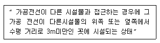
- 제1차 접근상태
- 제2차 접근상태
- 제3차 접근상태
- 제4차 접근상태
(정답률: 11%)
92. 다음 중 욕실 등 인체가 물에 젖어 있는 상태에서 물을 사용하는 장소에 콘센트를 시설하는 경우에 적합한 누전차단기는?
- 정격감도전류 15mA 이하, 동작시간 0.03초 이하의 전압 동작형 누전차단기
- 정격감도전류 15mA 이하, 동작시간 0.03초 이하의 전류 동작형 누전차단기
- 정격감도전류 15mA 이하, 동작시간 0.3초 이하의 전압 동작형 누전차단기
- 정격감도전류 15mA 이하, 동작시간 0.3초 이하의 전류 동작형 누전차단기
(정답률: 11%)
93. 금속제 지중 관로에 대하여 전식 작용에 의한 장해를 줄 우려가 있어 배류 시설에 선택 배류기를 사용하였다. 이 때 선택 배류기를 보호할 목적으로 어떤 것을 시설하여야 하는가?
- 과전류 차단기
- 과전압 계전기
- 유입 개폐기
- 피뢰기
(정답률: 11%)
94. 전기욕기용 전원장치의 금속제 외함 및 전선을 넣는 금속관에는 제 몇 종 접지공사를 하여야 하는가?
- 제1종
- 제2종
- 제3종
- 특별 제3종
(정답률: 6%)
95. 사용전압이 380V인 저압 전로의 전선 상호간의 절연저항은 몇 [MΩ] 이상이어야 하는가?
- 0.2MΩ
- 0.3MΩ
- 0.38MΩ
- 0.4MΩ
(정답률: 11%)
96. 발전소에서 계측장치를 설치하여 계측하는 사항에 포함되지 않는 것은?
- 발전기의 고정자 온도
- 발전기의 전압 및 전류 또는 전력
- 특별고압 모선의 전류 및 전압 또는 전력
- 주요 변압기의 전압 및 전류 또는 전력
(정답률: 12%)
97. 금속제 수도관로 또는 철골, 기타의 금속제를 접지극으로 사용한 제1종 또는 제2종 접지공사의 접지선 시설방법은 어느 것에 준하여 시설하여야 하는가?
- 애자 사용 공사
- 금속 몰드 공사
- 금속관 공사
- 케이블 공사
(정답률: 9%)
98. 다음 중 특별고압의 전선로로 시설하여서는 아니 되는 것은?
- 터널 안 전선로
- 지중 전선로
- 물밑 전선로
- 옥상 전선로
(정답률: 10%)
99. 가공전선로의 지지물에 시설하는 통신선과 고압 가공 전선사이의 이격거리는 몇 [cm] 이상이어야 하는가?
- 120cm
- 100cm
- 75cm
- 60cm
(정답률: 7%)
100. 과전류 차단기로 저압전로에 사용하는 퓨즈를 수평으로 붙인 경우의 동작 특성으로 옳은 것은? (단, 정격전류는 30A라고 한다.)
- 정격전류의 1.1배의 전류에 견딜 것
- 정격전류의 1.6배로 60분이상 견딜 것
- 정격전류의 1.8배로 120분이내에 용단될 것
- 정격전류의 2배의 전류로 10분안에 용단될 것
(정답률: 12%)
감광 보상률은 인간의 눈이 어떤 조도에서도 일정한 밝기를 느끼도록 보상하는 값이다. 이 값이 1.5이므로 인간의 눈은 실제 조도보다 1.5배 밝게 느낀다.
따라서 이 방의 평균 조도는 5000[lm]을 방의 면적 1000m2로 나눈 값인 5[lx]가 된다. 그러나 인간의 눈은 이 값을 1.5배 밝게 느끼므로 최종적으로는 5[lx] × 1.5 = 7.5[lx]가 된다. 이 값을 반올림하면 3.33이 된다.